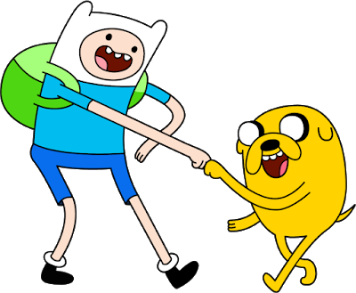
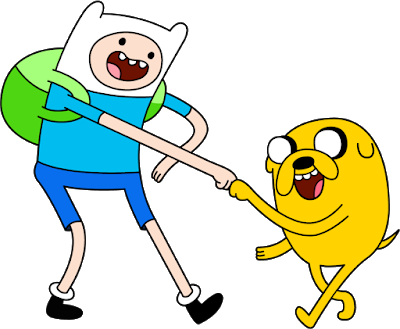

Estrenado el 3 de mayo de 2011

Posee 6 temporadas con 240 episodios

Tiene un rating de 8.2/10 en IMDb
El Increíble Mundo de Gumball Es una serie animada de comedia que sigue las aventuras de Gumball Watterson, un gato azul de 12 años, y su familia, quienes viven en la ciudad ficticia de Elmore. La serie combina diferentes estilos de animación, lo que da vida a personajes que van desde animales parlantes hasta objetos inanimados con personalidades humanas. Gumball, junto a su hermano adoptivo Darwin, un pez que ganó piernas, se enfrenta a situaciones hilarantes y absurdas, típicas de la vida escolar y familiar. La serie explora temas como la amistad, la familia, el crecimiento y la identidad a través de humor irreverente y surrealista. Cada episodio está lleno de referencias a la cultura pop, bromas visuales y situaciones caóticas que los personajes resuelven de maneras inesperadas y cómicas.
Estrenado el 3 de mayo de 2011
Posee 6 temporadas con 240 episodios
Tiene un rating de 8.2/10 en IMDb
Un Show Más (también conocido como Regular Show) es una serie animada que sigue a Mordecai, un despreocupado pájaro azul, y Rigby, un mapache hiperactivo, mientras trabajan como jardineros en un parque público. Bajo la supervisión de su jefe Benson, una máquina de chicles viviente, y en compañía de otros personajes extravagantes como Papaleta, Musculoso y Skips, los protagonistas se enfrentan a situaciones cotidianas que rápidamente se descontrolan, llevándolos a aventuras absurdas y a menudo sobrenaturales. La serie mezcla humor absurdo, referencias a la cultura pop y elementos fantásticos, creando historias donde simples tareas como cortar el césped o limpiar se convierten en épicas batallas con criaturas alienígenas, monstruos o seres de otras dimensiones. A lo largo de los episodios, Mordecai y Rigby intentan sortear sus responsabilidades mientras navegan por la amistad, la juventud y el caos que los rodea.
Estrenado el 6 de septiembre de 2010
Posee 8 temporadas con 261 episodios
Tiene un rating de 8.5/10 en IMDb
Hora de Aventura (Adventure Time) es una serie animada que sigue las aventuras de Finn, un valiente niño humano, y su mejor amigo, Jake, un perro con habilidades mágicas que le permiten cambiar de tamaño y forma. Ambientada en el colorido y surrealista mundo de Ooo, la serie explora temas de amistad, heroísmo y crecimiento personal mientras los protagonistas se enfrentan a una variedad de criaturas extrañas y situaciones fantásticas. Cada episodio presenta una mezcla de humor absurdo, emoción y profundos momentos reflexivos, mientras Finn y Jake interactúan con una galería de personajes memorables, como la Princesa Chicle, el Rey Helado y Marceline la Reina Vampiro. A medida que la historia avanza, se revelan oscuros secretos sobre el mundo de Ooo y los personajes que lo habitan, creando una narrativa rica que atrae tanto a niños como a adultos. Con su estilo artístico distintivo y su enfoque en la creatividad y la imaginación, Hora de Aventura se ha convertido en un fenómeno cultural y un referente en la animación contemporánea.
 

Estrenado el 5 de abril de 2010
Posee 10 temporadas con 283 episodios
Tiene un rating de 8.6/10 en IMDb